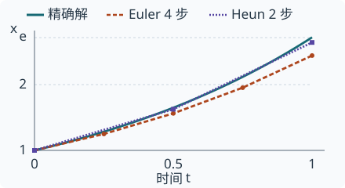

生成模型 · 采样与推理效率 · 2026
从同样四次模型求值的算例出发，比较求解器、时间步分配、CFG 和少步训练。结合 FLUX 配置与图像、视频评测，判断缓存、稀疏化和量化何时能缩短端到端延迟。
核验日期只对应以下记录中的资料，不表示全文所有历史结论均已重新核验。论文报告、源码核对与独立复现，以正文各处的说明为准。
首次发布以本仓库首次收录为准；原稿日期与历史实验快照保留在正文。
把 24 步改成 12 步，程序仍能出图。要判断改动是否值得，需要知道去掉了哪十二次计算、剩余计算用了多久，以及文字、细节和运动是否仍然达标。比较目标是在同一质量门槛下，缩短每个合格结果的交付时间。本文回答四个问题。一次采样步调用几次模型？时间点应该放在哪里？哪些少步方法需要专门权重？减少步数后，缓存和低精度还能节省多少时间？
想读懂采样器参数，从第 1–4 章开始。手里已有一个少步模型，可从第 5 章核对权重与推理配置。要给部署选方案，直接用第 6 章的成本拆分和第 7 章的质量验收表。
| 手里有什么 | 可以动哪里 | 第一组对照 |
|---|---|---|
| 一套冻结的权重 | 兼容的求解器、时间网格、外部 CFG | 同一初始噪声、同一模型求值预算，比较两种积分方法 |
| 教师和训练算力 | 蒸馏多步映射、一致性或分布目标 | 多步教师、普通权重直接降步、少步学生三组 |
| 已经训练好的少步权重 | 发布者支持的步数、引导与精度，再试缓存或稀疏化 | 先复现官方配置，再逐项开启优化 |
想象在雾中沿弯路行走。每次问路得到当前位置的方向，走多远由自己决定。扩散或 Flow 网络在给定状态、时间与文本条件下返回一个张量。调度器把这个输出转换成下一位置。路标相同，步子过大也可能切过弯道。[EDM][FM]
在常见的扩散参数化中，加噪状态写成 xₜ = αₜ x₀ + σₜ ε。这里 x₀ 是干净样本，ε 是高斯噪声。网络可以预测噪声，也可以预测干净样本。以预测噪声为例，在 αₜ 非零时可还原估计值 x̂₀ = (xₜ − σₜ ε̂) / αₜ。调度器选错输出类型，即使张量形状一致，更新量也会错。在 αₜ 很小的区域，直接做除法还会放大数值误差。[DPM][DPM++]
还有检查点使用 v_prediction。在 α²+σ²=1 的常用约定下，v = αε − σx₀，可反推 x₀ = αxₜ − σv。这个符号与 Flow Matching 中的速度场共享字母 v，接入调度器时要逐项查看训练目标、尺度和时间方向。[PD][FM]
换一套符号。令 z 为噪声、y 为数据，t 从 0 走到 1。直线插值为 x(t) = (1−t)z + ty，这对端点的监督速度始终是 y−z。推理时端点 y 未知，网络只能根据当前位置、时间和条件，估计与之相容的速度。多个端点对经过附近时，给出的方向可能不同。因此，单对端点的插值直，并不能保证学习到的整条生成轨迹一步走完。Reflow 用已学流产生新的端点配对再训练，使轨迹更适合粗步长。[FM][RF]
工程代码的时钟也可能相反。Diffusers v0.35.1 的 FlowMatch Euler 确定性分支按相邻 σ 的差更新 x ← x + (σ_next − σ) × model_output。当 σ 从大到小排列，该差值为负。移植时应一起抄验网格顺序、场的定义和端点，单独改符号容易沿反方向积分。[EULER]
DDIM 允许沿训练时间点的子序列生成。在确定性设置 η=0 下，从当前点估计干净样本和噪声，再按下一时间点的系数重组状态。保留更多中间点，就有更多次纠正方向的机会。这里可调整的是采样过程，原检查点的预测接口仍须匹配。[DDIM]
对常微分方程（ODE）dx/dt = f(x,t)，Euler 在步首取一次方向并前进一步。Heun 先用这个方向预测终点，再在预测点取第二个方向，用两者的平均值修正本步。后者在光滑场上有更高的收敛阶，每个完整步也多一次场求值。某些采样器在最后一个端点退回 Euler，实际 NFE 应从执行路径数出。[EDM]
NFE 是函数求值次数。本文先把一次求引导后的速度或噪声估计记为一次场求值。若它需要两个条件分支，再单列分支工作量和实际网络前向次数。比较论文时应先核对作者的 NFE 定义。
DPM-Solver 利用扩散 ODE 的半线性结构，解析处理线性部分，再近似含网络预测的积分。DPM-Solver++ 采用数据预测形式来改善引导采样的稳定性。多步公式可复用以往步骤的预测，达到相应阶数时，每个新时间点通常只需要一次新预测。启动阶段历史不足，要用较低阶公式。直接将网格减半或把任意 Flow 输出交给扩散专用系数，都需要重新检查适配条件。[DPM][DPM++]
取一条已知精确解的轨迹，从 x(0)=1 积分到 t=1，令 x′=x，则终点是 e。两种方法都只许问四次方向。Euler 可以走四步，Heun 可以走两步。下面的 Python 代码会数出实际调用次数并报告终点误差。
from math import e
def integrate(method, steps):
x = 1.0
h = 1.0 / steps
calls = 0
def velocity(position):
nonlocal calls
calls += 1
return position
for _ in range(steps):
first = velocity(x)
if method == "Heun":
second = velocity(x + h * first)
first = (first + second) / 2
x += h * first
return calls, x, abs(x - e)
for method, steps in [("Euler", 4), ("Heun", 2)]:
nfe, endpoint, error = integrate(method, steps)
print(f"{method}: {nfe} NFE, x={endpoint:.6f}, error={error:.6f}")| 求解器 | 步数 × 每步求值 | 预测终点 | 绝对误差 |
|---|---|---|---|
| Euler | 4 × 1 | 2.441406 | 0.276876 |
| Heun | 2 × 2 | 2.640625 | 0.077657 |

Euler 四次都沿步首方向前进，在这条不断变陡的轨迹上会持续低估增长。Heun 的第二次求值修正了这个偏差。真实模型还会有场估计误差、有限精度和引导误差，这个可解析例子只隔离了积分误差。DPM-Solver 原论文在 CIFAR-10 上报告 10 与 20 次函数求值的 FID 分别为 4.70、2.87，这组数限于论文自己的模型、数据与测量条件。[DPM]
同样四段路可以设在等间隔时间 t、等间隔噪声 σ，或接近等间隔的对数信噪比上。信噪比为 α²/σ²，取对数后，噪声跨几个数量级的变化更容易比较。t 到 σ 的变换通常是非线性的，所以界面里同样写着“四步”的两套网格，实际访问的噪声区域可能不同。对数坐标在端点可能发散，复现时应保存完整数列与真实的端点处理方式。[EDM][DPM]
设精确轨迹的局部弯曲程度较大，用长直线跨过这里就容易偏离。把采样点移到这一区域可以降低局部误差，但要从别处挪走点，而且早期误差可能传递到后续。因而“总在高噪声区加点”或“总在末端加点”都需要结合模型、求解器和任务验证。Align Your Steps 直接针对模型、求解器和数据优化时间表，给出了固定步数下比较网格的实验范式。[AYS]
先锁定权重、求解器阶数、引导和预算，保存默认网格的实际 σ 列表。在校准提示词上选择候选网格，把两套列表冻结，再到留出提示词上用成对初始噪声比较。记录具体分辨率和序列长度，有动态 shift（时间轴重映射）的实现还应保存重映射后的列表。只公布调度器名称和步数，别人无法重建这次轨迹。[AYS][EULER]
Yuan 等把全体样本共用一张表扩展为基于输入信息分配时间点。落地时要分别记录挑选网格的开销、每个样本的 NFE 和最终质量。对于批处理，还应检查不同网格是否会拆散批次，以及最慢样本是否拖长整批的完成时间。后两项为本文建议的系统验证。[GRID]
无分类器引导（classifier-free guidance，CFG）让模型在同一状态和时间下分别给出无条件预测 u 和有条件预测 c，以 u + s(c − u) 合成为更新方向。这里采用 s=1 时得到 c 的约定。增大 s 会放大条件信号，也会放大两分支预测差异中的误差。在少步设置下应重新选择引导强度。[CFG][DPM++]
假设每张图走 12 步 Euler，每步都需要两分支。按本文口径，共有 12 次引导后的场求值和 24 次单样本分支求值。若正负分支分别跑，网络调用 24 次。若实现将两者沿 batch 维拼接，则调用 12 次，每次处理双倍的样本数。两种方式还可能占用不同的显存和墙钟时间。单看模型调用计数，会漏掉每次调用实际处理的数据量。
| 检查点 | 采样步数 | 引导系数 | 文本长度上限（token） |
|---|---|---|---|
| FLUX.1 [schnell] | 4 | 0.0 | 256 |
| FLUX.1 [dev] | 50 | 3.5 | 512 |
两项参数在示例中分别写作 guidance_scale 和 max_sequence_length。在本文核对的 Diffusers v0.35.1 中，若 transformer 配置启用了 guidance_embeds，FluxPipeline 会把 guidance_scale 编成张量送入网络。另一条路径检查 true_cfg_scale > 1 且有负面提示输入，才额外执行负分支，再按 true CFG 系数组合。看到 [dev] 示例填了 3.5，无法据此推断每步跑了两次。可以给 transformer 加前向计数器，同时记录每次 latent 的 batch 大小来验证。[PIPE][DEV]
这两张卡展示的是不同权重及其用法。[schnell] 面向一至四步推理，[dev] 使用引导蒸馏。50 ÷ 4 只能给出示例步数之比。比较两条产品路径时，还需要在自己的提示词、硬件和输出尺寸下测质量、文本编码、去噪和解码耗时。[SCHNELL][DEV]
| 训练目标 | 一个训练样本如何产生信号 | 验证时观察什么 |
|---|---|---|
| 渐进蒸馏 [PD] | 教师连续走两步，学生从同一起点走一步，学习到达教师的端点。下一轮以学生作为新教师，继续将步数减半。 | 比较约定时间网格上的学生误差，观察连续几轮压缩后细节能否保留。 |
| 一致性模型 [CM] | 学习把同一条概率流 ODE 轨迹上的不同噪声状态映到共同的近数据端点。可从预训练模型蒸馏，也可直接从数据训练。 | 从高噪声直接预测一次，再与算法规定的多步再加噪、校正路径比较。 |
| 分布匹配蒸馏 DMD [DMD] | 用真实与学生生成分布的分数估计之差给生成器提供更新方向。原版还用教师生成的配对数据作回归约束。 | 评估整组输出的质量与多样性，同时检查同一提示词连续换种子会不会反复生成相似画面。 |
这三个目标对应不同的验收信号。逐点回归适合观察轨迹误差。训练若只要求生成分布接近，在固定种子下与教师逐像素对齐就没有充分依据。对使用者来说，先跑通学生支持的时间点和引导接口，再逐项改动，才容易查出画质变化来自哪里。[PD][CM][DMD]
若能直接得到整个区间的平均速度，乘上区间长度即可到达终点。难点在于，区间中的位置依赖尚未积分的轨迹。MeanFlow 建立平均速度与瞬时速度的关系，据此从数据训练区间预测器，支持一步生成。这与将普通瞬时速度模型的 Euler 步长调到全程有不同的训练前提。[MEAN]
Lin 等的 Data-Space Iteration 让后续调用直接在数据空间修正前一次预测。论文在类别条件 ImageNet 256×256 上检验少步生成，提供了另一种分配有限前向预算的方式。将结论移到文本生成视频，需要重新覆盖长提示对齐、运动连续和跨帧身份等质量维度。[DSI]
用于部署的最小对照有三组。先跑原权重推荐的多步配置，然后用同一权重直接降步，最后在相同步数预算下换成少步学生及其配套参数。第一、二组估计直接降步的损失，第二、三组观察更换整套训练与推理配置能恢复多少质量。若中间还换了引导方式，另列分支工作量。
在各阶段串行的单请求中，可以按 总耗时 = 排队 + 文本编码 + 各次去噪耗时之和 + VAE 解码 + 传输与后处理 记账。VAE 解码把低维潜变量还原成像素。若服务重叠执行阶段，则用时间线上的关键路径来算用户等待，分别保留各算子耗时作归因。
例如，假设编码需 120 ms，解码需 100 ms，每次去噪需 20 ms，其他开销忽略。24 次去噪时总计 700 ms，减到 12 次是 460 ms，端到端加速约 1.52 倍。若已有四步学生，总计 300 ms。假设中间两步复用部分计算后各需 5 ms，总耗时为 270 ms，加速约 1.11 倍。以上均为用于核算的设定值，实际跳过哪些层及画质是否达标要另外测量。
最小组合实验包括“原步数”“只减步”“只开缓存”“减步并开缓存”。同一权重下保持其余条件一致，分别记录每步全量计算或命中情况。量化与稀疏化也可各自套用这张四格表。缓存若省掉了本会执行的注意力层，稀疏化就只能继续优化余下的调用。两个单项加速比直接相乘会将重叠部分算两次。
| 记录项 | 最低可重建信息 |
|---|---|
| 输入与配置 | 固定提示词和负面提示词，留出独立验收集，每条配多个种子。兼容的模型复用保存的初始噪声张量。若潜空间不同，保留相同的提示词分层与抽样策略。记录检查点修订、调度器代码版本、实际时间网格、引导与输出尺寸。 |
| 成本 | 记录设备、精度、batch、编译与预热、权重卸载、视频帧数和帧率。同步 GPU 后测各段耗时，另以客户端时钟记录冷启动和稳态端到端 p50/p95、吞吐和峰值显存。输出可流式播放时分别记首个可观看帧和整段交付时间。 |
| 图像质量 | 覆盖文字拼写、多物体关系、手部和细纹理，保存每种失败的样张。自动指标锁定特征模型、前处理、样本数和参考集，同时盲评提示词满足率与伪影。单张样例无法给出分布级 FID。 |
| 视频质量 | 额外覆盖快速运动、遮挡后重现、镜头转换和长时背景。按整段盲评运动是否完成、身份是否一致，记录闪烁和跨帧漂移。逐帧看似清晰的视频仍可能几乎静止。实时世界模型专题 |
先定可容忍的质量损失，再看结果。例如，团队约定“提示词满足率相对基线的绝对降幅最多 2 个百分点”。每条提示词同时送入两组，随机隐去方法名与左右次序。以提示词为单位成组重采样，连同其全部种子计算差值的置信区间。若差值区间下界低于 −2 个百分点，该组证据不足以通过这个门槛。这里的 2 个百分点是决策示例，各任务要自行预先约定。
在所有画质与运动门槛均通过的配置中，比较同一负载下的 p95 延迟、显存与每个合格结果的成本。超时、显存不足、触发重试或质检拒收的请求都进入账本。图像服务可以选稳定低延迟的配置，离线视频生产则可按整段通过率与单位合格视频成本取舍。性能评测与可复现实验
论文以 arXiv 首次提交日期标注。模型卡与固定版本源码核对于 2026-11-04。图 2-1 和表 2-1 来自标量计算，第 6 章的延迟为教学设定值，第 7 章给出在目标设备上执行的实验协议。